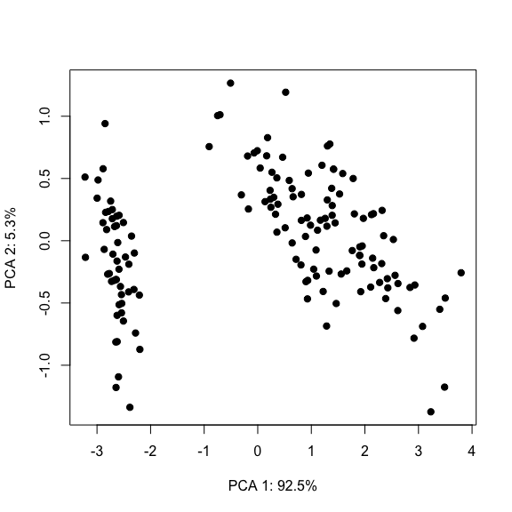
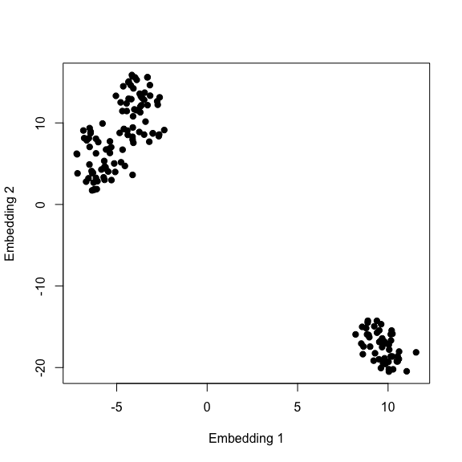
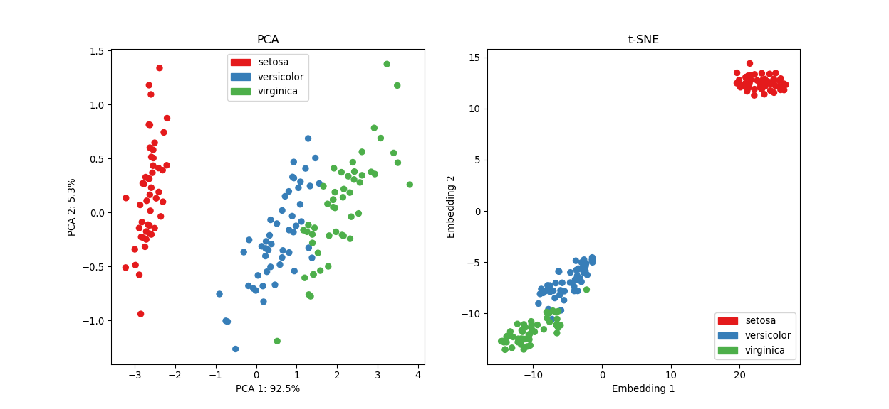

3 Dimensionality Reduction
High-dimensional datasets are nowadays very common in science. Reducing the number of features per observation can provide several benefits:
Elucidating the best predictors of the underlying process (plausible causal drivers under an experimental setup).
Highlighting the data’s structure through visualisation.
Improving the model’s predictive performance by removing uninformative features/extracting better features.
Decreasing computational power.
The rationale behind dimensionality reduction is straightforward:
Although the data may seem high dimensional, the structure of the data can be represented by fewer features.
This situation arises due to redundant features; driven by multicollinearity and/or covariates that are only weakly associated with the underlying process. Reducing the dimensionality of a problem is achieved through:
Feature extraction: mapping the original data to a new feature set.
Feature selection: selecting a subset of attributes.
In the machine learning literature the term dimensionality reduction is commonly associated with (typically) unsupervised methods that transform high-dimensional data to a lower dimensional feature set, whilst feature selection is treated as part of the predictive modelling framework. This is because feature selection is generally performed in a supervised fashion (although some unsupervised methods do exist). Following this notion, feature selection will be discussed later on in the supervised learning section.
3.1 Feature extraction
Analogous to representing complex and multifaceted concepts, such as biological diversity or health by using a diversity index or body mass index (BMI), feature extraction deals with finding “good” representations of high-dimensional data sets. For example, should we describe an image by individual pixel intensities or by extracting higher-order structures such as edges and shapes? The objective is to:
Construct new features from the original measured variables that accentuate the inherent patterns in the data and are non-redundant.
Feature extraction is a key step in machine learning; finding representations that are directly relevant to the task at hand (e.g. discriminating between two classes) will almost always result in better predictive accuracy than employing more complex models. Dimensionality reduction techniques aggregate dimensions together while trying to preserve as much of the data’s structure as possible. That is, observations that are “close” to each other remain so in the lower-dimensional projection.
Here we introduce two popular “automatic” methods, PCA and t-SNE. Note, that the alternative to “automatic” methods is to “hand-craft” features, also known as feature engineering. This relies on expert knowledge to specify a set of potentially discriminatory features. For example, activity trackers (e.g Fitbit, Garmin Vivosport) rely on accelerometer data (the “raw” observed data) to recognise the current activity (e.g sleeping, running, walking). This rather noisy accelerometer data cannot be used directly. Instead a sliding time window is used to compute several time-domain (e.g statistical attributes such as mean and variance) and frequency-domain (e.g min/max frequencies, band power) features.
3.1.1 PCA
Principal component analysis (PCA) is a linear dimensionality reduction method with widespread use. The new uncorrelated features (PCA 1, PCA 2,…) are weighted linear combinations of the original data:
\[ \text{PCA 1} = w_{11}x_1 + w_{12}x_2 + \ldots + w_{1p}x_p\\ \text{PCA 2} = w_{21}x_1 + w_{22}x_2 + \ldots + w_{2p}x_p\\ \vdots\\ \text{PCA p} = w_{p1}x_1 + w_{p2}x_2 + \ldots + w_{pp}x_p \] Where the \(x\)’s are the original features and \(w\)’s are the weights
The weights are determined in such a way to find directions, called principal components, that maximise the variance of the data. Mathematically, this is the same as minimising the sum of squared distances from data points to their projections. This is also equivalent to maximising the trace and determinant of the covariance matrix of the projected data.

For a data matrix \(X \in \mathbb{R}^{n\ \mathrm{x}\ p}\), (\(n\): no. observations, \(p\): no. of covariates), the PCAs can be derived as follows:
Compute covariance matrix \(\Sigma\) on the standardised data.
Compute eigenvectors/eigenvalues of covariance matrix \(\Sigma = U\Lambda U^{-1}\). Where\(\Lambda\) is a diagonal matrix of eigenvalues and the columns in \(U\) are the eigenvectors. 2
Sort eigenvectors by decreasing eigenvalues and choose \(k\) eigenvectors with the largest eigenvalues.
Use resultant \(p \times k\) matrix to project \(X\) onto new subspace.
The variance explained by the chosen \(k\)-components is \(\frac{\sum_{i=1}^k\lambda_i}{\sum_{i=1}^D\lambda_i} \times 100\%\)
Typically the first two or three components are used to plot the data in an attempt to reveal any groupings.
Importance of components:
PC1 PC2 PC3 PC4
Standard deviation 2.0563 0.49262 0.2797 0.15439
Proportion of Variance 0.9246 0.05307 0.0171 0.00521
Cumulative Proportion 0.9246 0.97769 0.9948 1.00000# Extract variance explained
varExpl <- round((mdl$sdev^2 / sum(mdl$sdev^2))*100, digits=1)
# Visualise the first two PCs
plot(mdl$x[, 1], mdl$x[, 2], pch=19,
xlab=paste0('PCA 1: ', varExpl[1], '%'),
ylab=paste0('PCA 2: ', varExpl[2], '%'))
Some of you might notice that the R and Python results have opposite signs. This is not a bug, but merely the fact that changing the sign of the components does not change the variance and neither their interpretion (see here for more details).
Note: Even though we know that the Iris dataset is composed of three distinct species, the PCA plot is only accentuating two groups. This could be due to several reasons. For example, two species might be very close to each other and/or the linearity assumption is not satisfied. Recall that the objective of PCA is to maximise the variance of the data rather than finding clusters per se (see here for an extended discussion).
3.1.2 t-SNE
t-Distributed Stochastic Neighbor Embedding (t-SNE) is a non-linear dimensionality reduction technique. t-SNE finds a way to project the data into a lower-dimensional space/embedding such that the original high-dimensional clustering is preserved. The paper describing the algorithm is available here, however, I recommend watching this accessible presentation first, given by the author himself. Moreover, there’s this nice live demo that explains the effect of each hyperparameter on the t-SNE output.
# Compute t-SNE embedding
library(Rtsne)
set.seed(103) # to reproduce results
mdl <- Rtsne(X=iris[-5], dims=2, check_duplicates=FALSE)
# Visualise results
plot(mdl$Y[, 1], mdl$Y[, 2], pch=19,
xlab='Embedding 1',
ylab='Embedding 2')
# Compute t-SNE embedding
from sklearn.manifold import TSNE
seed(103) # to reproduce results
mdl = TSNE(n_components=2)
embedding = mdl.fit_transform(X=iris.data)
# Visualise the first two PCs
plt.figure(figsize=(6, 5))
plt.scatter(embedding[:, 0], embedding[:, 1])
plt.xlabel('Embedding 1')
plt.ylabel('Embedding 2')
plt.show()Looks like t-SNE does a better job than PCA in seperating one cluster from another, and some might also argue that there’s some evidence for the presence of a third cluster.
Let’s colour the data points by their respective species:
# PCA + t-SNE
pca <- prcomp(x=iris[, -5])
set.seed(103) # to reproduce results
tsne <- Rtsne(X=iris[, -5], dims=2, check_duplicates=FALSE)
# Extract variance explained for PCA
varExpl <- round((pca$sdev^2 / sum(pca$sdev^2))*100, digits=1)
# Assign colour to each species
library(RColorBrewer)
k <- length(levels(iris[, 5])) # no. of true underlying clusters
myCol <- seq(k)
names(myCol) <- brewer.pal(n=k, 'Set1')
# Plot results
par(mfrow=c(1, 2))
# PCA
plot(pca$x[, 1], pca$x[, 2], pch=19,
xlab=paste0('PCA 1: ', varExpl[1], '%'),
ylab=paste0('PCA 2: ', varExpl[2], '%'),
col=names(myCol[as.numeric(iris[, 5])]),
main='PCA')
legend("topright", levels(iris[, 5]), bty="n", col=names(myCol), pch=19)
# t-SNE
plot(tsne$Y[, 1], tsne$Y[, 2], pch=19,
xlab='Embedding 1',
ylab='Embedding 2',
col=names(myCol[as.numeric(iris[, 5])]),
main='t-SNE')
legend("topright", levels(iris[, 5]), bty="n", col=names(myCol), pch=19)
import matplotlib.patches as mpatches
# PCA + t-SNE
pca = PCA(n_components=2).fit(X=iris.data)
PCs = pca.transform(X=iris.data) # extract PCs
seed(103) # to reproduce results
tsne = TSNE(n_components=2).fit_transform(X=iris.data)
# Assign colour to each species
from palettable.colorbrewer.qualitative import Set1_3
colDict = {0: Set1_3.hex_colors[0], 1: Set1_3.hex_colors[1], 2: Set1_3.hex_colors[2]}
myCol = [colDict[i] for i in iris.target]
# Plot results
hFig, hAx = plt.subplots(1, 2, figsize=(13,6))
# PCA
hAx[0].scatter(PCs[:, 0], PCs[:, 1], c=myCol)
hAx[0].set_xlabel('PCA 1: {:.1f}%'.format(pca.explained_variance_ratio_[0]*100))
hAx[0].set_ylabel('PCA 2: {:.1f}%'.format(pca.explained_variance_ratio_[1]*100))
hAx[0].set_title('PCA')
legend = []
for i, species in enumerate(iris.target_names):
legend.append(mpatches.Patch(color=colDict[i], label=species))
hAx[0].legend(loc='upper center', handles=legend)
# t-SNE
hAx[1].scatter(tsne[:, 0], tsne[:, 1], c=myCol)
hAx[1].set_xlabel('Embedding 1')
hAx[1].set_ylabel('Embedding 2')
hAx[1].set_title('t-SNE')
legend = []
for i, species in enumerate(iris.target_names):
legend.append(mpatches.Patch(color=colDict[i], label=species))
hAx[1].legend(loc='lower right', handles=legend)
plt.show()
Although t-SNE does a better job at seperating setosa from the rest and creates tighter clusters, it’s still hard to tell versicolor and virginica apart in the absence of their label (although these groups are better defined in the t-SNE plot). As discussed in the previous clustering section, this is a shortcoming of unsupervised learning methods, that is, we can never be sure about the “true” underlying number of groups.
Nevertheless, these dimensionality reduction techniques are incredibly useful at visualising high-dimensional datasets and uncover global structure.
\(\Sigma\) must be postive semi-definite. The singular value decomposition (SVD) is usually preferred over eigendecomposition as it’s more numerically stable↩